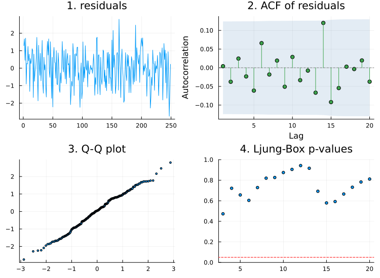
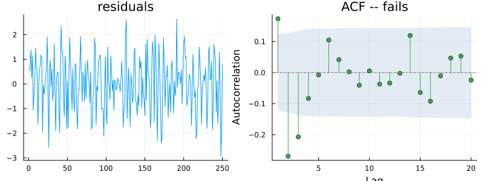
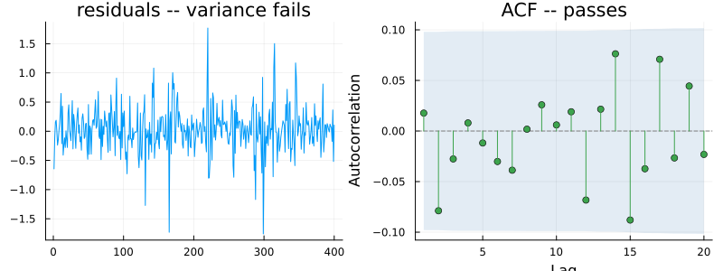
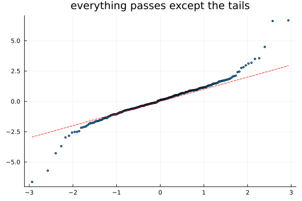

The Diagnostic Panel
using TSAnalytics, Plots, StatsAPI, Random
Random.seed!(6)
n = 300
y = zeros(n)
for t in 3:n
y[t] = 0.6*y[t-1] - 0.3*y[t-2] + randn()
end
y = y[50:end]
m = arx(y, 2; trend=:c)
resid = StatsAPI.residuals(m)
p1 = plot(resid; title="1. residuals", legend=false)
p2 = plot(acf(resid, 1:20); title="2. ACF of residuals")
sorted_r = sort(resid)
nq = length(sorted_r)
tq = [TSAnalytics._std_normal_quantile((i - 0.5) / nq) for i in 1:nq]
p3 = scatter(tq, sorted_r; markersize=2, legend=false, title="3. Q-Q plot")
lb_panel = diagnostic_plot(resid; fitdf=2)
p4 = scatter(lb_panel.lb_lags, lb_panel.ljungbox_pvalues; markersize=3, legend=false,
title="4. Ljung-Box p-values", ylims=(0,1))
hline!(p4, [0.05]; color=:red, linestyle=:dash)
plot(p1, p2, p3, p4; layout=(2,2), size=(750,550))
Running each of these four checks in turn works, and in practice nobody does it. A model gets fitted, someone glances at one thing, and the model ships. The remedy is not more discipline. It is making the complete check cheap enough that skipping it takes more effort than running it — which is what a single combined picture is for.
One picture
Read the four panels the way Chapters 10 and 11 already earned. The standardised residuals should look like noise around zero with no drift and no visibly changing spread — this first panel is where Chapter 11's variance problems show up by eye, before any test runs. The ACF should sit inside its band. The Q-Q plot should track the reference line, with departures at the tails being the common and often tolerable failure. And the Ljung-Box panel should stay above the 0.05 line across every lag shown.
It is worth noticing that this is not four unrelated tests bolted together. Panel four carries Chapter 10's and Chapter 11's material at once, and panel one silently duplicates part of what Chapter 11 already checks by eye. The panel is a designed set with deliberate overlap, not a random assortment.
How many lags, and why it matters
Random.seed!(13)
n2 = 240
resid_seasonal = 0.2 .* sin.(2π .* (0:n2-1) ./ 12) .+ randn(n2)
r_default = diagnostic_plot(resid_seasonal; fitdf=0)
r_monthly = diagnostic_plot(resid_seasonal; fitdf=0, period=12)
println("default (period=1): nlag=", r_default.nlag, " min p=", round(minimum(r_default.ljungbox_pvalues), digits=4))
println("period=12 (monthly): nlag=", r_monthly.nlag, " min p=", round(minimum(r_monthly.ljungbox_pvalues), digits=4))default (period=1): nlag=20 min p=0.1902
period=12 (monthly): nlag=36 min p=0.0127Same residuals, two different lag counts, two different verdicts. Read out to the default panel width the model looks fine — every p-value comfortable. Read out with the lag count astsa::sarima actually uses for monthly data, the same residuals fail decisively. Nothing about the residuals changed. What changed is how far the panel actually looked.
The formula, taken directly from astsa::sarima's own source: the lag count is 20 when the seasonal period is under 7, or three times the seasonal period otherwise, capped at 52 and then padded to sit at least eight beyond the number of already-estimated parameters. For a monthly model, period = 12, so nlag = 3 * 12 = 36 — confirmed directly above. This package's own diagnostic_plot follows that formula exactly (_diagnostic_nlag in src/diagnosticplot.jl), not a fixed default nobody examined. Testing a monthly model only out to ten or twenty lags never reaches the seasonal lag at all, and the residuals above show precisely why that is not a safe simplification.
d0 = diagnostic_plot(resid; fitdf=0)
d2 = diagnostic_plot(resid; fitdf=2)
println("without fitdf: min p=", round(minimum(d0.ljungbox_pvalues), digits=4))
println("with fitdf=2: min p=", round(minimum(d2.ljungbox_pvalues), digits=4))without fitdf: min p=0.7253
with fitdf=2: min p=0.473Chapter 10 introduced the fitdf correction; this is where it bites visibly. Without it, the p-value curve sits too high across the entire panel and the model looks a little better specified than it actually is.
Reading a split verdict
The chapter's real subject. Three cases, each genuinely different.
m_under = arx(y, 1; trend=:c)
r_under = StatsAPI.residuals(m_under)
d_under = diagnostic_plot(r_under; fitdf=1)
p1 = plot(r_under; title="residuals", legend=false)
p2 = plot(acf(r_under, 1:20); title="ACF -- fails")
plot(p1, p2; layout=(1,2), size=(800,300))
println("Ljung-Box min p: ", ljungbox_test(r_under, 10; fitdf=1).pvalue)
println("Jarque-Bera p: ", round(jarque_bera_test(r_under).pvalue, digits=3))Ljung-Box min p: 2.749365714075751e-6
Jarque-Bera p: 0.276Structure left in the ACF at an identifiable set of lags, everything else clean. This is the easy case to act on — the lags that fail tell you directly what is still missing, and the model is under-specified in a specific, fixable way. Add the missing structure and refit.
Random.seed!(20)
n3 = 400
e = randn(n3)
garch_resid = zeros(n3)
garch_resid[1] = e[1]
for t in 2:n3
garch_resid[t] = sqrt(0.05 + 0.85 * garch_resid[t-1]^2) * e[t]
end
p1 = plot(garch_resid; title="residuals -- variance fails", legend=false)
p2 = plot(acf(garch_resid, 1:20); title="ACF -- passes")
plot(p1, p2; layout=(1,2), size=(800,300))
println("Ljung-Box p: ", round(ljungbox_test(garch_resid, 10).pvalue, digits=3))Ljung-Box p: 0.932Correlation is gone. Variance plainly is not. This is Chapter 11's trapdoor showing up inside the panel itself, and the remedy is not another autoregressive term — no amount of mean modelling repairs a variance problem. The panel is not asking for a bigger model here; it is pointing at Part V.
function contaminated_normal(n)
v = randn(n)
for i in 1:n
rand() < 0.1 && (v[i] *= 3.0)
end
return v
end
Random.seed!(11)
cn = contaminated_normal(300)
sorted_cn = sort(cn)
tq2 = [TSAnalytics._std_normal_quantile((i - 0.5) / length(cn)) for i in 1:length(cn)]
scatter(tq2, sorted_cn; markersize=2, legend=false, title="everything passes except the tails")
plot!([extrema(tq2)...], [extrema(tq2)...]; color=:red, linestyle=:dash)
println("Ljung-Box p: ", round(ljungbox_test(cn, 10).pvalue, digits=3))
println("Jarque-Bera p: ", round(jarque_bera_test(cn).pvalue, digits=6))Ljung-Box p: 0.837
Jarque-Bera p: 0.0The most practically common case of the three. Correlation is fine, variance is stable, and the tails alone depart from the reference line. The honest reading is that the point forecasts from a model with residuals like these are almost certainly fine, and the prediction intervals are almost certainly too narrow. Whether that matters depends entirely on what the forecast is being used for — a reader who treats every failed panel as fatal will discard models that are perfectly usable, and a reader who treats every failure as safely ignorable will ship intervals that under-cover in practice.
What the panel cannot tell you
m_small = arx(y, 3; trend=:c)
m_big = arx(y, 15; trend=:c)
r_small = StatsAPI.residuals(m_small)
r_big = StatsAPI.residuals(m_big)
d_small = diagnostic_plot(r_small; fitdf=3)
d_big = diagnostic_plot(r_big; fitdf=15)
println("3-parameter model: min Ljung-Box p = ", round(minimum(d_small.ljungbox_pvalues), digits=3))
println("15-parameter model: min Ljung-Box p = ", round(minimum(d_big.ljungbox_pvalues), digits=3))3-parameter model: min Ljung-Box p = 0.445
15-parameter model: min Ljung-Box p = 0.311Chapter 10 made this point about the plain ACF, and the full panel inherits it unchanged. Both panels above are clean. One of these two models has more than five times as many parameters as the other, fit to data that only ever needed two lags. Diagnostics test whether a model has captured enough of the structure in a series. They are entirely silent on whether it used far more machinery than it needed to. That question belongs to the information criteria of Chapter 21. Until then, a clean diagnostic panel means not obviously wrong — a genuinely useful thing to know, and a considerably weaker claim than most readers give it credit for.
For Indian monthly data the panel's fourth quadrant needs to reach at least lag 12, and preferably lag 24, because the seasonal lag is exactly where a model of Indian industrial or retail data is most likely to fail — the festival calendar moves, and a fixed twelve-month structure cannot fully absorb that movement. A panel drawn with a short default lag count, the way this chapter's own seasonal example showed, can present a clean bill of health on a model with real, visible residual seasonality simply because it never looked far enough to find it. On this kind of data the lag count is not a cosmetic setting.
Where this leaves you
Part II is finished. A series can now be tested for stationarity before modelling begins, and a fitted model's residuals can be checked afterwards, in one combined picture rather than four separate errands.
What none of Part II lets you do yet is fit anything. Every model examined across these five chapters has simply been assumed into existence, already fitted, for the sake of illustrating what a diagnostic finds. Part III separates a series into pieces that can actually be seen — trend, season, and what is left over. Part IV builds the first models in this book that are genuinely fitted from data.